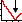

Unser Ethan sieht nun noch etwas seltsam aus. Ballview bietet die Möglichkeit automatisch die Bindungslängen und Winkel des Moleküls zu korrigieren. Hierzu klickt man einfach auf den -Button. Es wird eine Energieminimierung durchgeführt.
Falls unser Molekül noch nicht ganz korrekt dargestellt wird (evtl. verdeckte statt gestaffelter Konformation), kann eine erneute Minimierung Verbesserung schaffen. Zur Not kann auch unter "Molekulare Mechanik ⇒ Energy Minimization" die vollständige Energieminimierung gestartet werden.